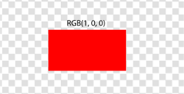
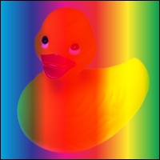
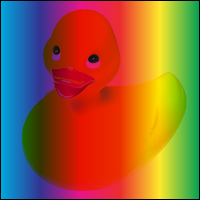
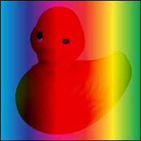
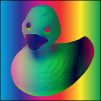

Abstract
Compositing describes how shapes of different elements are combined
into a single image. There are various possible approaches for
compositing. Previous versions of SVG used Simple
Alpha Compositing. In this model, each element is rendered into its
own buffer and is then merged with its backdrop
using the Porter Duff source-over operator.
This specification will define a new compositing model that expands upon
the Simple Alpha Compositing model by offering:
- additional Porter Duff compositing operators;
- advanced blending modes which allow control of how colors mix in the
areas where shapes overlap; and
- compositing groups
Status of This Document
This is a public copy of the editors' draft. It is provided for
discussion only and may change at any moment. Its publication here does
not imply endorsement of its contents by W3C. Don't cite this document
other than as work in progress.
The (archived) public
mailing list public-fx@w3.org (see
instructions) is preferred
for discussion of this specification. When sending e-mail, please put the
text “compositing-1” in the subject, preferably like this:
“[compositing-1] …summary of comment…”
This document was produced by the CSS Working Group (part of
the Style Activity) and the SVG Working Group (part of the
Graphics Activity).
This document was produced by groups operating under the 5 February
2004 W3C Patent Policy. W3C maintains a public list of any patent disclosures (CSS) and a public list of any patent disclosures (SVG) made in
connection with the deliverables of each group; these pages also include
instructions for disclosing a patent. An individual who has actual
knowledge of a patent which the individual believes contains Essential
Claim(s) must disclose the information in accordance with section
6 of the W3C Patent Policy.
For changes since the previous draft, see the changes
section.
Table of contents
1. Introduction
This subsection is non-normative.
The first part of this document describes the properties used to control
the compositing in CSS. The second part will describe the algorithms of
Porter Duff compositing and blending.
2. Reading This
Document
Each section of this document is normative unless otherwise
specified.
2.1. Module
interactions
This specification defines a set of CSS properties that affect the
visual rendering of elements to which those properties are applied; these
effects are applied after elements have been sized and positioned
according to the Visual formatting model from [CSS21]. Some
values of these properties result in the creation of a containing block, and/or the creation
of a stacking context.
The ‘background-blend-mode’ property
also builds upon the properties defined in the CSS Backgrounds and Borders module.[CSS3BG]
This specification also enhances the rules as specified in Section 14.2 Simple alpha compositing of
[SVG11] and simple alpha compositing of [CSS3COLOR].
This module also extends the ‘globalcompositeoperation’ as defined in [2DCONTEXT2].
2.2. Values
This specification follows the CSS property
definition conventions from [CSS21]. Value types not defined in
this specification are defined in CSS Level 2 Revision 1 [CSS21]. Other CSS modules may expand
the definitions of these value types: for example [CSS3COLOR], when combined with
this module, expands the definition of the <color> value type as used
in this specification.
In addition to the property-specific values listed in their definitions,
all properties defined in this specification also accept the inherit
keyword as their property value. For readability it has not been repeated
explicitly.
3. Specifying
Blending in CSS
3.1. Order of
graphical operations
The compositing model must follow the SVG
compositing model [SVG11]: first any filter effect is
applied, then any clipping, masking, blending and compositing.
3.2. Behavior
specific to HTML
Everything in CSS that creates a stacking context must be
considered an ‘isolated’ group. HTML elements themselves
should not create groups.
An element that has blending applied, must blend with all the
underlying content of the stacking context [CSS21] that that
element belongs to.
3.3. Behavior
specific to SVG
By default, every element must create a non-isolated group.
However, certain operations in SVG will create isolated groups. If one of the following
features is used, the group must become isolated:
- opacity
- filters
- 3D transforms (2D transforms must NOT cause isolation)
- blending
- masking
3.4. CSS Properties
3.4.1. The ‘mix-blend-mode’
property
The blend mode defines the formula that must be used to mix the colors
with the backdrop.
This behavior is described in more detail in Blending.
The syntax of the property of <blend-mode> is given with:
<blend-mode> = normal | multiply | screen | overlay | darken | lighten | color-dodge | color-burn | hard-light | soft-light | difference | exclusion | hue | saturation | color | luminosity
Applying a blendmode other than ‘normal’ to the
element must establish a new stacking context [CSS21]. This group
must then be blended and composited with the stacking context that
contains the element.
Given the following sample markup:
<body>
<img src="ducky.png"/>
</body>"
And the following style rule:
body { background-color: green; }
... will produce the following result:
If we change the style rule to include blending:
body { background-color: green; }
img { mix-blend-mode: multiply; }
... the output will be the image blending with the green background of
the <body> element.
Given the following svg code:
<svg>
<circle cx="40" cy="40" r="40" fill="red"/>
<circle cx="80" cy="40" r="40" fill="green"/>
<circle cx="60" cy="80" r="40" fill="blue"/>
</svg>
And the following style rule:
circle { mix-blend-mode: screen; }
... the output will be blending of the 3 circles. Each circle is
rendered from bottom to top. Where the elements overlap, the blend mode
produces a change in color.
In the following style sheet and document fragment:
body { background-color: green; }
div { background-color: red; width: 200px; opacity: .95}
img { mix-blend-mode: difference; }
<body>
<div>
<img src="ducky.png"/>
</div>
</body>
... the ‘opacity’ on the <div>
element is causing the creation of a stacking context. This causes the
creation of a new group so the image doesn't blend with the color of the
<body>.
Note how the image is not blending with the green color.
Given the following sample markup:
<body>
<div>
<p>'overlay' blending on text</p>
</div>
</body>
And the following style rule:
div { background-image: url('texture.png'); }
@font-face {
font-family: "Mythos Std";
src: url("http://myfontvendor.com/mythos.otf");
}
p {
mix-blend-mode: overlay;
font-family: "Mythos Std"
}
3.4.2. The ‘isolation’
property
In SVG, this defines whether an element is isolated or not.
For CSS, setting ‘isolation’ to ‘isolate’ will turn the element into a stacking
context.
By default, elements use the ‘auto’
keyword which implies that they are not isolation. However operations that
cause the creation of stacking context [CSS21] must cause a group to be
isolated. These operations are described in ‘behavior specific to
HTML’ and ‘behavior specific to SVG’.
The syntax of the property of <isolation-mode> is given
with:
<isolation-mode> = auto | isolate
In CSS, a background image or the content of an <img> must always
be rendered into an isolated group.
For instance, if you link to an SVG file through the ‘img’ tag, the artwork of that SVG will not blend
with the backdrop of the content.
In SVG, ‘mask’ always creates an isolated group.
3.4.3. The ‘background-blend-mode’ property
Defines the blending mode of each background layer.
Each background layer must blend with the element's background layer that
are below it and the element's background color. Background layer must not
blend with the content that is behind the element instead they must act as
if they are rendered into an isolated group.
The description of the ‘background-blend-mode’ property is as
follows:
- ‘
background-blend-mode’
-
| Value:
| <blendmode>#
|
| Initial:
| normal
|
| Applies to:
| All HTML elements
|
| Inherited:
| no
|
| Percentages:
| N/A
|
| Media:
| visual
|
| Computed value:
| as specified
|
| Animatable:
| no
|
The ‘background-blend-mode’ list must be applied
in the same order as ‘background-image’[CSS3BG]. This means that the first
element in the list will apply to the layer that is on top. If a property
doesn't have enough comma-separated values to match the number of layers,
the UA must calculate its used value by repeating the list of values until
there are enough.
If the ‘background’ [CSS3BG]
shorthand is used, the ‘background-blend-mode’ property for that
element must be reset to its initial value.
Given the following sample markup:
<body>
<div></div>
</body>
And the following style rule:
body { background-color: green; }
div {
width: 200px;
height: 200px;
background-size: 200px 200px;
background-repeat:no-repeat;
background-image: linear-gradient(to right, #000000 0%,#ffffff 100%), url('ducky.png');
background-blend-mode: difference, normal;
}
Note that the gradient is not blending with the color of <body>.
Instead it retains its original color.
4. Specifying
Compositing and Blending in Canvas 2D
The canvas 2d context has
the globalCompositeOperation
attribute that is used to set the current compositing and blending
operator.
Compositing and blending in canvas 2D must always done with clip-to-self assumed false. This
means that a compositing operation may affect the entire canvas and not
just be limited to the shape that is being composited. However, the clipping region
will still be in effect and limit the affected area.
- ‘
globalCompositeOperation’
-
The syntax of the property of <composite-mode> is given with:
<composite-mode> = clear | copy | destination | source-over | destination-over | source-in | destination-in | source-out | destination-out | source-atop | destination-atop | xor | lighter
5. Introduction to
compositing
This subsection is non-normative.
Compositing is the combining of a graphic element with its backdrop.
In the model described in this specification there are two steps to the
overall compositing operation - Porter-Duff
compositing and blending. Porter Duff
compositing takes into account the overall shape of the graphic element
and its opacity, as well as the opacity and shape of the backdrop, and
determines where the backdrop is visible, where the graphic element is
visible and where one is visible through the other. The blending step
determines how the colors from the graphic element and the backdrop
interact.
Typically, the blending step is performed first, followed by the
Porter-Duff compositing step. In the blending step, the resultant color
from the mix of the element and the the backdrop
is calculated. The graphic element's color is replaced with this resultant
color. The graphic element is then composited with the backdrop using the specified compositing operator.
Shape is defined by the mathematical description of the shape. Shape
either exists at a particular point or it does not. There are no
gradations. Opacity is described using an alpha value, stored alongside
the color value for each particular point. The alpha value is between 0
and 1, inclusive. A value of 0 means that the pixel has no coverage at
that point, and is therefore transparent; i.e. there is no color
contribution from any geometry because the geometry does not overlap this
pixel. A value of 1 means that the pixel is fully opaque; the geometry
completely overlaps the pixel.
5.1. Simple alpha
compositing
The simple alpha compositing model used in previous versions of SVG
allowed for the illusion of partial or full transparency. While this
specification provides the author the choice of many Porter Duff
compositing operators and many blending modes, the simple alpha
compositing model enforces a single Porter Duff compositing operator and a
single blend mode.
The formula for simple alpha compositing is
co = Cs x αs + Cb x αb x (1 - αs)
Where
co: the premultiplied pixel value after compositing
Cs: the color value of the source graphic element being composited
αs: the alpha value of the source graphic element being composited
Cb: the color value of the backdrop
αb: the alpha value of the backdrop
All values are between 0 and 1 inclusive.
The pixel value after compositing (co) is given by adding the
contributions from the source graphic element [Cs x αs] and the backdrop
[Cb x αb x (1 - αs)]. For both the graphic element and the backdrop, the
color values are multiplied by the alpha to determine the amount of color
that contributes. With zero alpha meaning that the color does not
contribute and partial alpha means that some percentage of the color
contributes. The contribution of the backdrop is further reduced based on
the opacity of the graphic element. Conceptually, (1 - αs) of the
backdrop shows through the graphic element, meaning that if the graphic
element is fully opaque (αs=1) then no backdrop shows through.
The simple alpha compositing formula listed above gives a resultant
color which is the result of the weighted average of the backdrop color
and graphic element color, with the weighting determined by the backdrop
and graphic element alphas.
The resultant alpha value of the composite is simply the sum of the
contributed alpha of the composited elements. The formula for the
resultant alpha of the composite is
αo = αs + αb x (1 - αs)
Where
αo: the alpha value of the composite
αs: the alpha value of the graphic element being composited
αb: the alpha value of the backdrop
Often, it can be more efficient to store a pre-multiplied
value for the color and opacity. The pre-multiplied value is given
by
cs = Cs x αs
with
cs: the pre-multiplied value
Cs: the color value
αs: the alpha value
Thus the formula for simple alpha compositing using pre-multplied
values becomes
co = cs + cb x (1 - αs)
To extract the color component of a pre-multiplied value, the formula
is reversed:
Co = co / αo
5.1.1.
Examples of simple alpha compositing

Figure 1
Figure 1 describes the most basic case. It consists of 1 shape that is
filled with a solid color (α = 1). The shape is composited with an empty
background. The empty background has no effect on the resultant
composite.
Cs = RGB(1,0,0)
αs = 1
Cb = RGB(0,0,0)
αb = 0
co = Cs x αs + Cb x αb x (1 - αs)
co = RGB(1,0,0) x 1 + RGB(0,0,0) x 0 x (1 - 1)
co = RGB(1,0,0) x 1
co = RGB(1,0,0)

Figure 2
Figure 2 is a more complex example. There is no transparency, but the
2 shapes intersect.
Applying the compositing formula in the area of intersection, gives:
Cs = RGB(0,0,1)
αs = 1
Cb = RGB(1,0,0)
αb = 1
co = Cs x αs + Cb x αb x (1 - αs)
co = RGB(0,0,1) x 1 + RGB(1,0,0) x 1 x (1 - 1)
co = RGB(0,0,1) x 1 + RGB(1,0,0) x 1 x 0
co = RGB(0,0,1) x 1
co = RGB(0,0,1)
Calculating the alpha of the resultant composite
αo = αs + αb x (1 - αs)
αo = 1 + 1 x (1 - 1)
αo = 1
Calculating the color component of the resultant composite
Co = co / αo
Co = RGB(0, 0, 1) / 1
Co = RGB(0, 0, 1)

Figure 3
Figure 3 shows an example where the shape has some transparency, but
the backdrop is fully opaque.
Applying the compositing formula in the area of intersection, gives:
Cs = RGB(0,0,1)
αs = 0.5
Cb = RGB(1,0,0)
αb = 1
co = Cs x αs + Cb x αb x (1 - αs)
co = RGB(0,0,1) x 0.5 + RGB(1,0,0) x 1 x (1 - 0.5)
co = RGB(0,0,1) x 0.5 + RGB(1,0,0) x 0.5
co = RGB(0.5,0,0.5)
Calculating the alpha of the resultant composite
αo = αs + αb x (1 - αs)
αo = 0.5 + 1 x (1 - 0.5)
αo = 1
Calculating the color component of the resultant composite
Co = co / αo
Co = RGB(0.5, 0, 0.5) / 1
Co = RGB(0.5, 0, 0.5)

Figure 4
Figure 4 shows an example where both the shape and the backdrop are transparent.
Applying the compositing formula in the area of intersection, gives:
Cs = RGB(0,0,1)
αs = 0.5
Cb = RGB(1,0,0)
αb = 0.5
co = Cs x αs + Cb x αb x (1 - αs)
co = RGB(0,0,1) x 0.5 + RGB(1,0,0) x 0.5 x (1 - 0.5)
co = RGB(0,0,1) x 0.5 + RGB(1,0,0) x 0.25
co = RGB(0.25, 0, 0.5)
Calculating the alpha of the resultant composite
αo = αs + αb x (1 - αs)
αo = 0.5 + 0.5 x (1 - 0.5)
αo = 0.75
Calculating the color component of the resultant composite
Co = co / αo
Co = RGB(0.25, 0, 0.5) / 0.75
Co = RGB(0.33, 0, 0.66)
This subsection is non-normative.
The general formula for compositing and blending which allows for
selection of the compositing operator and blending function comprises two
steps. The terms used in these functions will be described in detail in
the following sections.
Apply the blend in place
Cs = (1 - αb) x Cs + αb x B(Cb, Cs)
Composite
Co = αs x Fa x Cs + αb x Fb x Cb
Where:
Cs: is the source color
Cb: is the backdrop color
αs: is the source alpha
αb: is the backdrop alpha
B(Cb, Cs): is the mixing function
Fa: is defined by the Porter Duff operator in use
Fb: is defined by the Porter Duff operator in use
7. Backdrop calculation
This subsection is non-normative.
The backdrop is the content behind the element and is what the element is
composited with. This means that the backdrop is the result of compositing
all previous elements.
7.1. Examples of backdrop
calculation

Figure 5
Figure 5 has 2 simple shapes. The backdrop for the blue shape includes
the bottom right corner of the red shape . The dotted line shows the area
that is examined during compositing of the blue shape.

Figure 6
In figure 6, the shape in the backdrop has an alpha value. The alpha
value of the backdrop shape is preserved when the backdrop is calculated.
8. Compositing Groups
This subsection is non-normative.
Compositing groups allow more control over the interaction of compositing
with the backdrop. Groups can be used to specify how a compositing effect
within a group will interact with the content that is already in the scene
(the backdrop).
Compositing groups may be made up of any number of elements, and may
contain other compositing groups.
The default properties of a compositing group shall cause no visual
difference compared to having no group. See Group Invariance.
A compositing group is rendered by first compositing the elements of
the group onto the inital backdrop. The result of this is a single element
containing color and alpha information. This element is then composited
onto the group backdrop. Steps shall be taken to ensure the group backdrop
makes only a single contribution to the final composite.
- initial backdrop
- The intial backdrop is the backdrop used for compositing the group's
first element. This will be the same as the group backdrop in a
non-isolated group, or a fully transparent backdrop for an isolated
group.
- group backdrop
- The group backdrop is the result of compositing all elements up to
but not including the frist element in the group. The use of knockout groups changes this definition.
8.1. Group invariance
An important property of simple alpha compositing is its group
invariance. This behavior is preserved in the more complex model described
in this specification. Adding or removing grouping with default attributes
shall not show visual differences.
so: A + B + C = A + (B + C) = (A + B) + C
When adding attributes to the group such as ‘knockout’, ‘isolate’, blending modes other than ‘normal’ or Porter Duff
compositing operators other than ‘source-over’, groups may no longer be invariant.
8.2. Isolated Groups
In an isolated group, the initial backdrop shall be black and fully
transparent.
In this instance, the initial backdrop is different than the group
backdrop. The only interaction with the group backdrop shall occur when
the group's computed color, shape and alpha are composited with it.
See ‘Isolated
groups and Porter Duff modes’ for a description of the effect
of isolated groups on compositing. See ‘Effect of group isolation on
blending’ for a description of the effect of isolated groups
on blending.
8.3. Knockout Groups
In a knockout group, each individual element shall be composited with
the initial backdrop rather than with the stack of preceeding elements in
the group. When calculating the backdrop for an
element inside a knockout group, the elements of the group are ignored.
Instead, only the elements that are behind the knockout group are included
in the backdrop.
The above example demonstrates two versions of a group containing three
squares (red, green, blue) that are 50% opaque. The group is composited
over a grey striped background.
On the left, the group has the ‘knock-out’
property activated. On the right, the group has the ‘knock-out’ property disabled'.
If the ‘knock-out’ property is disabled,
each element within the group is only composited with the elements
underneath the group.
8.4. The Page Group
The top level group is the page group. All other elements and groups
are composited into this group. The page group is an isolated group.
The page group is composited with a backdrop color defined by the UA.
Typically this will be white with 100% opacity.
The page group may be used as an element in another graphical composition.
For example, this is an SVG file that contains a red object at 50%
opacity.
The UA will composite the page group onto a white background with 100%
opacity.
The results are as follows:
co = RGB(255, 0, 0) * .5 + RGB(255, 255, 255) * 1 * (1 - .5)
co = RGB(127, 0, 0) + RGB(127, 127, 127)
co = RGB(255, 127, 127)
which is the color value ultimately displayed by the UA.
9. Advanced compositing
features
This subsection is non-normative.
Simple alpha compositing uses the
source-over Porter Duff compositing operator.
Porter Duff compositing is based on a model of a pixel in which two
shapes (source and destination) may contribute to the final color of the
pixel. The pixel is divided into 4 sub-pixel regions and each region
represents a possible combination of source and destination.
The four regions are:
- Source Only
- Where only the source contributes to the pixel color
- Destination only
- where only the destination contributes to the pixel color
- Both
- Source and Destination – where both the source and destination may
combine to define the pixel color
- None
- No source or Destination – where neither make a contribution to the
final pixel color
Destination is synonymous with backdrop. The term destination
is used in this section as this is considered the standard when working
with Porter Duff compositing. Additionally, the compositing operators use
‘destination’ in their names.
The contribution from each region to the final pixel color is defined by
the coverage of the shape at that pixel, and the operator in use. Coverage
is specified in terms of alpha. Full alpha (1) implies full coverage,
while zero alpha (0) implies no coverage. This means that the area of each
region within the sub-pixel is dependent on the coverage of each shape
contributing to the pixel. The area of each region can be calculated with
the following equations:
| Both
| αs x αb
|
| Source only
| αs x (1 – αb)
|
| Destination only
| αb x (1 – αs)
|
| None
| (1 – αs) x (1 – αb)
|
The figure above represents coverage of 0.5 for both source and
destination.
Both = 0.5 x 0.5 = 0.25
Source Only = 0.5 (1 – 0.5) = 0.25
Destination Only = 0.5(1 – 0.5) = 0.25
None = (1 – 0.5)(1 – 0.5) = 0.25
Therefore, the coverage of each region is 0.25 in this example.
9.1. The
Porter Duff Compositing Operators
The landmark paper by Thomas Porter and Tom Duff, who worked for
Lucasfilm, defined the algebra of compositing and developed the twelve
"Porter Duff" operators. These operators control the results of mixing the
four sub-pixel regions formed by the overlapping of graphical objects that
have an alpha or pixel coverage channel/value. The operators use all
practical combinations of the four regions.
There are 12 basic Porter Duff operators, satisfying all possible
combinations of source and destination.
From the geometric representation of each operator, the contribution of
each shape can be seen to be expressed as a fraction of the total coverage
of the output. For example, in source over, the possible contribution of
source is full (1) and the possible contribution of destination is
whatever is remaining (1 – αs). This is modified by the coverage of
source and destination to give the equation for the final coverage of the
pixel:
αo = αs x 1 + αb x (1 – αs)
The fractional terms Fa (1 in this example) and Fb (1 – αs in this
example) are defined for each operator and specify the fraction of the
shapes that may contribute to the final pixel value. The general form of
the equation for coverage is:
αs x Fa + αb x Fb
and incorporating color gives the general Porter Duff equation
co = αs x Fa x Cs + αb x Fb x Cb
Where:
co is the output color pre-multiplied with the output alpha [0 <= co
<= 1]
αs is the coverage of the source Fa is defined by the operator and
controls inclusion of the source Cs is the color of the source (not
multiplied by alpha)
αb is the coverage of the destination Fb is defined by the operator and
controls inclusion of the destination Cb is the color of the destination
(not multiplied by alpha)
9.1.1.
Clear
No regions are enabled.

Fa = 0; Fb = 0
co = 0
αo = 0
9.1.2.
Copy
Only the source will be present.

Fa = 1; Fb = 0
co = αs x Cs
αo = αs
9.1.3.
Destination
Only the destination will be present.

Fa = 0; Fb = 1
co = αb x Cb
αo = αb
9.1.4.
Source Over
Source is placed over the destination

Fa = 1; Fb = 1 – αs
co = αs x Cs + αb x Cb x (1 – αs)
αo = αs + αb x (1 – αs)
9.1.5.
Destination Over
Destination is placed over the source.

Fa = 1 – αb; Fb = 1
co = αs x Cs x (1 – αb) + αb x Cb
αo = αs x (1 – αb) + αb
9.1.6.
Source In
The source that overlaps the destination, replaces the destination.
Fa = αb; Fb = 0
co = αs x Cs x αb
αo = αs x αb
9.1.7.
Destination In
Destination which overlaps the source, replaces the source.

Fa = 0; Fb = αs
co = αb x Cb x αs
αo = αb x αs
9.1.8.
Source Out
Source is placed, where it falls outside of the destination.
Fa = 1 – αb; Fb = 0
co = αs x Cs x (1 – αb)
αo = αs x (1 – αb)
9.1.9.
Destination Out
Destination is placed, where it falls outside of the source.
Fa = 0; Fb = 1 – αs
co = αb x Cb x (1 – αs)
αo = αb x (1 – αs)
9.1.10.
Source Atop
Source which overlaps the destination, replaces the destination.
Destination is placed elsewhere.

Fa = αb; Fb = 1 – αs
co = αs x Cs x αb + αb x Cb x (1 – αs)
αo = αs x αb + αb x (1 – αs)
9.1.11.
Destination Atop

Destination which overlaps the source replaces the source. Source is
placed elsewhere.
Fa = 1 - αb; Fb = αs
co = αs x Cs x (1 - αb) + αb x Cb x αs
αo = αs x (1 - αb) + αb x αs
9.1.12.
XOR
The non-overlapping regions of source and destination are combined.

Fa = 1 - αb; Fb = 1 – αs
co = αs x Cs x (1 - αb) + αb x Cb x (1 – αs)
αo = αs x (1 - αb) + αb x (1 – αs)
9.1.13.
Lighter
Display the sum of the source image and destination image. It is defined
in the Porter Duff paper [3] as the ‘plus’
operator.
Fa = 1; Fb = 1
co = αs x Cs + αb x Cb;
αo = αs + αb
9.2. Group compositing
behavior with Porter Duff modes
9.2.1. Isolated
groups and Porter Duff modes
When compositing the elements within an isolated group, the elements
are composited over a transparent black initial backdrop. If the bottom
element in the group uses a Porter Duff compositing operator which is
dependent on the backdrop, such as destination, source-in, destination-in, destination-out or source-atop, then the
result of the composite will be empty. Subsequent elements within the
group are composited with the result of the first composite.
9.2.2. Knockout
groups and Porter Duff modes
Every element within a knock-out group is composited with the initial
backdrop. This means, that for every element within the group, the
backdrop for the compositing of that element, is the initial backdrop.
In the example below, the elements within the group (the circle and the
square) are composited using the source-atop operator,
with only the hexagon. This has the effect of "knocking out" the circle,
where it is overlapped by the square.
Additionally, because the source-atop Porter Duff operator is used, the
source shape (either the square or the circle) is only placed where the
backdrop exists (the backdrop being the hexagon for both compositing
operations within the group).
9.2.3. Clip to
self behavior
When compositing, the areas of the composite that may be modified by
the compositing operation, must fall within the shape of the element being
composited (i.e. where α > 0). This is known as "clip to self" in some
graphics libraries. The alternative is to not clip the compositing
operation at all. The results can be seen in the figure below. Some of the
Porter Duff operators are unchanged, because they normally have no effect
outside the source region. The changes can be seen in the clear, source,
source-in, destination-in, source-out and destination-atop.
10. Blending
This subsection is non-normative.
Blending is the aspect of compositing that calculates the mixing of colors
where the source element and backdrop overlap.
Conceptually, the colors in the source element are blended in place with
the backdrop. After blending, the modified source element is composited
with the backdrop. In practice, this is usually all performed in one step.
The blending calculations must not use pre-multiplied color
values.
The "mixing" formula is defined as:
Cm = B(Cb, Cs)
with:
Cm: the result color after blending
B: the formula that does the blending
Cb: the backdrop color
Cs: the source color
The result of the mixing formula must be clamped to the minimum and
maximum values of the color range.
The result of the mixing function is modulated by the backdrop alpha. A
fully opaque backdrop allows the mixing function to be fully realised. A
transparent backdrop will cause the final result to be a weighted average
between the source color and mixed color with the weight controlled by the
backdrop alpha. The value of the new color becomes:
Cr = (1 - αb) x Cs + αb x B(Cb, Cs)
with:
Cr: the result color
B: the formula that does the blending
Cs: the source color
Cb: the backdrop color
αb: the backdrop alpha

This example has a red rectangle with a blending mode that is placed
on top of a set of green rectangles that have different levels of
opacity.
Note how the top rectangle shifts more toward red as the opacity of the
backdrop lowers.
The following formula gives the color value in the area where the
source and backdrop intersects and then composites with the specified
Porter Duff compositing formula. For simple alpha blending, the formula
thus becomes:
simple alpha compositing:
co = cs + cb x (1 - αs)
written as non-premultiplied:
αo x Co = αs x Cs + (1 - αs) x αb x Cb
now subsitute the result of blending for Cs:
αo x Co = αs x ((1 - αb) x Cs + αb x B(Cb, Cs)) + (1 - αs) x αb x Cb
= αs x (1 - αb) x Cs + αs x αb x B(Cb, Cs) + (1 - αs) x αb x Cb
10.1. Separable blend
modes
A blend mode is termed separable if each component of the result color
is completely determined by the corresponding components of the
constituent backdrop and source colors — that
is, if the mixing formula is applied separately to each
set of corresponding components.
Each of the following blend modes will apply the blending function
B(Cb, Cs) on each of the color components. For simplicity, all the
examples in this chapter use source-over
compositing.
10.1.1. ‘normal’ blend mode
This is the default attribute which specifies no blending. The blending
formula simply selects the source color.
B(Cb, Cs) = Cs
10.1.2. ‘multiply’ blend mode
The source color is multiplied by the destination color and replaces
the destination.
The resultant color is always at least as dark as either the source or
destination color. Multiplying any color with black results in black.
Multiplying any color with white preserves the original color.
B(Cb, Cs) = Cb x Cs

10.1.3. ‘screen’ blend mode
Multiplies the complements of the backdrop and
source color values, then complements the result.
The result color is always at least as light as either of the two
constituent colors. Screening any color with white produces white;
screening with black leaves the original color unchanged. The effect is
similar to projecting multiple photographic slides simultaneously onto a
single screen.
B(Cb, Cs) = 1 - [(1 - Cb) x (1 - Cs)]
= Cb + Cs -(Cb x Cs)

10.1.4. ‘overlay’ blend mode
Multiplies or screens the colors, depending on the backdrop color value.
Source colors overlay the backdrop while
preserving its highlights and shadows. The backdrop color is not replaced but is mixed with the
source color to reflect the lightness or darkness of the backdrop.
B(Cb, Cs) = HardLight(Cs, Cb)
Overlay is the inverse of the ‘hardlight’ blend mode. See the definition of
‘hardlight’ for the formula.

10.1.5. ‘darken’ blend mode
Selects the darker of the backdrop and source
colors.
The backdrop is replaced with the source where
the source is darker; otherwise, it is left unchanged.
B(Cb, Cs) = min(Cb, Cs)

10.1.6. ‘lighten’ blend mode
Selects the lighter of the backdrop and source
colors.
The backdrop is replaced with the source where
the source is lighter; otherwise, it is left unchanged.
B(Cb, Cs) = max(Cb, Cs)
The result must be rounded down if it exceeds the range.

10.1.7. ‘color-dodge’ blend mode
Brightens the backdrop color to reflect the
source color. Painting with black produces no changes.
if(Cb == 0)
B(Cb, Cs) = 0
else if(Cs == 1)
B(Cb, Cs) = 1
else
B(Cb, Cs) = min(1, Cb / (1 - Cs))
10.1.8. ‘color-burn’ blend mode
Darkens the backdrop color to reflect the
source color. Painting with white produces no change.
if(Cb == 1)
B(Cb, Cs) = 1
else if(Cs == 0)
B(Cb, Cs) = 0
else
B(Cb, Cs) = 1 - min(1, (1 - Cb) / Cs)

10.1.9. ‘hard-light’ blend mode
Multiplies or screens the colors, depending on the source color value.
The effect is similar to shining a harsh spotlight on the backdrop.
if(Cs <= 0.5)
B(Cb, Cs) = Multiply(Cb, 2 x Cs)
else
B(Cb, Cs) = Screen(Cb, 2 x Cs -1)
See the definition of ‘multiply’ and
‘screen’ for their formulas.
10.1.10. ‘soft-light’ blend mode
Darkens or lightens the colors, depending on the source color value.
The effect is similar to shining a diffused spotlight on the backdrop
if(Cs <= 0.5)
B(Cb, Cs) = Cb - (1 - 2 x Cs) x Cb x (1 - Cb)
else
B(Cb, Cs) = Cb + (2 x Cs - 1) x (D(Cb) - Cb)
with
if(Cb <= 0.25)
D(Cb) = ((16 * Cb - 12) x Cb + 4) x Cb
else
D(Cb) = sqrt(Cb)

10.1.11. ‘difference’ blend mode
Subtracts the darker of the two constituent colors from the lighter
color.
Painting with white inverts the backdrop color;
painting with black produces no change.
B(Cb, Cs) = | Cb - Cs |

10.1.12. ‘exclusion’ blend mode
Produces an effect similar to that of the Difference mode but lower in
contrast. Painting with white inverts the backdrop
color; painting with black produces no change
B(Cb, Cs) = Cb + Cs - 2 x Cb x Cs

10.2. Non-separable
blend modes
Nonseparable blend modes consider all color components in combination
as opposed to the seperable ones that look at each component
individually.
All of these blend modes conceptually entail the following steps:
- Convert the backdrop and source colors from
the blending color space to an intermediate hue-saturation-luminosity
representation.
- Create a new color from some combination of hue, saturation, and
luminosity components selected from the backdrop
and source colors.
- Convert the result back to the original color space.
The nonseparable blend mode formulas make use of several auxiliary
functions:
Lum(C) = 0.3 x Cred + 0.59 x Cgreen + 0.11 x Cblue
ClipColor(C)
L = Lum(C)
n = min(Cred, Cgreen, Cblue)
x = max(Cred, Cgreen, Cblue)
if(n < 0)
C = L + (((C - L) * L) / (L - n))
if(x > 1)
C = L + (((C - L) * (1 - L)) / (x - L))
return C
SetLum(C, l)
d = l - Lum(C)
Cred = Cred + d
Cgreen = Cgreen + d
Cblue = Cblue + d
return ClipColor(C)
Sat(C) = max(Cred, Cgreen, Cblue) - min(Cred, Cgreen, Cblue)
The subscripts min, mid, and max in the next function refer to the color
components having the minimum, middle, and maximum values upon entry to the function.
SetSat(C, s)
if(Cmax > Cmin)
Cmid = (((Cmid - Cmin) x s) / (Cmax - Cmin))
Cmax = s
else
Cmid = Cmax = 0
Cmin = 0
return C;
10.2.1. ‘hue’ blend mode
Creates a color with the hue of the source color and the saturation and
luminosity of the backdrop color.
B(Cb, Cs) = SetLum(SetSat(Cs, Sat(Cb)), Lum(Cb))

10.2.2. ‘saturation’ blend mode
Creates a color with the saturation of the source color and the hue and
luminosity of the backdrop color. Painting with
this mode in an area of the backdrop that is a
pure gray (no saturation) produces no change.
B(Cb, Cs) = SetLum(SetSat(Cb, Sat(Cs)), Lum(Cb))

10.2.3. ‘color’ blend mode
Creates a color with the hue and saturation of the source color and the
luminosity of the backdrop color. This preserves
the gray levels of the backdrop and is useful for
coloring monochrome images or tinting color images.
B(Cb, Cs) = SetLum(Cs, Lum(Cb))

10.2.4. ‘luminosity’ blend mode
Creates a color with the luminosity of the source color and the hue and
saturation of the backdrop color. This produces an
inverse effect to that of the Color mode.
B(Cb, Cs) = SetLum(Cb, Lum(Cs))
10.3. Effect of group
isolation on blending
In the following example, the elements used to construct the paper
aeroplane are within a group. Each of these elements has their blend mode
set to multiply.
The aeroplane on the left is a normal group, the aeroplane on the right is
an isolated group.
In the isolated group, the elements within the group are composited onto
an empty initial backdrop, this stops the elements within the group
multiplying with the backdrop.
In the normal group, the elements within the group are composited onto the
initial backdrop containing the land and sky. Therefore the elements of
the aeroplane multiply with the land and sky.
In both instances, the result of the group composite is composited onto
the land and sky using the normal mix-blend-mode (the default
mix-blend-mode applied to the group).
11. Security issues with
compositing and blending
It is important that the timing to the blending and compositing
operations is independant of the source and destination pixel. Operations
must be implemented in such a way that they always take the same amount of
time regardless of the pixel values.
If this rule is not followed, an attacker could infer information and
mount a timing attack.
A timing attack is a method of obtaining information about content that
is otherwise protected, based on studying the amount of time it takes for
an operation to occur. If, for example, red pixels took longer to draw
than green pixels, one might be able to reconstruct a rough image of the
element being rendered, without ever having access to the content of the
element.
Document conventions
Conformance requirements are expressed with a combination of descriptive
assertions and RFC 2119 terminology. The key words “MUST”, “MUST
NOT”, “REQUIRED”, “SHALL”, “SHALL NOT”, “SHOULD”,
“SHOULD NOT”, “RECOMMENDED”, “MAY”, and “OPTIONAL” in the
normative parts of this document are to be interpreted as described in RFC
2119. However, for readability, these words do not appear in all uppercase
letters in this specification.
All of the text of this specification is normative except sections
explicitly marked as non-normative, examples, and notes. [RFC2119]
Examples in this specification are introduced with the words “for
example” or are set apart from the normative text with
class="example", like this:
This is an example of an informative example.
Informative notes begin with the word “Note” and are set apart from
the normative text with class="note", like this:
Note, this is an informative note.
Conformance to this is defined for three conformance classes:
- style
sheet
- A CSS
style sheet.
- renderer
- A UA
that interprets the semantics of a style sheet and renders documents that
use them.
- authoring tool
- A UA
that writes a style sheet.
A style sheet is conformant to this specification if all of its
statements that use syntax defined in this module are valid according to
the generic CSS grammar and the individual grammars of each feature
defined in this module.
A renderer is conformant to this specification if, in addition to
interpreting the style sheet as defined by the appropriate specifications,
it supports all the features defined by this specification by parsing them
correctly and rendering the document accordingly. However, the inability
of a UA to correctly render a document due to limitations of the device
does not make the UA non-conformant. (For example, a UA is not required to
render color on a monochrome monitor.)
An authoring tool is conformant to this specification if it writes style
sheets that are syntactically correct according to the generic CSS grammar
and the individual grammars of each feature in this module, and meet all
other conformance requirements of style sheets as described in this
module.
Partial implementations
So that authors can exploit the forward-compatible parsing rules to
assign fallback values, CSS renderers must treat as
invalid (and ignore as
appropriate) any at-rules, properties, property values, keywords, and
other syntactic constructs for which they have no usable level of support.
In particular, user agents must not selectively ignore
unsupported component values and honor supported values in a single
multi-value property declaration: if any value is considered invalid (as
unsupported values must be), CSS requires that the entire declaration be
ignored.
Experimental implementations
To avoid clashes with future CSS features, the CSS 2.1 specification
reserves a prefixed
syntax for proprietary and experimental extensions to CSS.
Prior to a specification reaching the Candidate Recommendation stage in
the W3C process, all implementations of a CSS feature are considered
experimental. The CSS Working Group recommends that implementations use a
vendor-prefixed syntax for such features, including those in W3C Working
Drafts. This avoids incompatibilities with future changes in the draft.
Non-experimental implementations
Once a specification reaches the Candidate Recommendation stage,
non-experimental implementations are possible, and implementors should
release an unprefixed implementation of any CR-level feature they can
demonstrate to be correctly implemented according to spec.
To establish and maintain the interoperability of CSS across
implementations, the CSS Working Group requests that non-experimental CSS
renderers submit an implementation report (and, if necessary, the
testcases used for that implementation report) to the W3C before releasing
an unprefixed implementation of any CSS features. Testcases submitted to
W3C are subject to review and correction by the CSS Working Group.
Further information on submitting testcases and implementation reports
can be found from on the CSS Working Group's website at http://www.w3.org/Style/CSS/Test/.
Questions should be directed to the public-css-testsuite@w3.org
mailing list.
13. References
13.1. Normative References
-
- [2DCONTEXT2]
- Rik Cabanier; et al. HTML
Canvas 2D Context, Level 2. 28 May 2013. W3C Working Draft.
(Work in progress.) URL: http://www.w3.org/TR/2013/WD-2dcontext2-20130528/
- [CSS21]
- Bert Bos; et al. Cascading Style
Sheets Level 2 Revision 1 (CSS 2.1) Specification. 7 June
2011. W3C Recommendation. URL: http://www.w3.org/TR/2011/REC-CSS2-20110607
- [CSS3BG]
- Bert Bos; Elika J. Etemad; Brad Kemper. CSS
Backgrounds and Borders Module Level 3. 24 July 2012. W3C
Candidate Recommendation. (Work in progress.) URL: http://www.w3.org/TR/2012/CR-css3-background-20120724/
- [CSS3COLOR]
- Tantek Çelik; Chris Lilley; L. David Baron. CSS Color
Module Level 3. 7 June 2011. W3C Recommendation. URL: http://www.w3.org/TR/2011/REC-css3-color-20110607
- [RFC2119]
- S. Bradner. Key
words for use in RFCs to Indicate Requirement Levels. Internet
RFC 2119. URL: http://www.ietf.org/rfc/rfc2119.txt
- [SVG11]
- Erik Dahlström; et al. Scalable
Vector Graphics (SVG) 1.1 (Second Edition). 16 August 2011.
W3C Recommendation. URL: http://www.w3.org/TR/2011/REC-SVG11-20110816/
- [PORTERDUFF]
- Compositing Digital Images, T. Porter, T. Duff,
SIGGRAPH ‘
84 Conference Proceedings, Association for
Computing Machinery, Volume 18, Number 3, July 1984.
- [SVG-COMPOSITING]
- SVG
Compositing Specification, A. Grasso, ed. World Wide Web
Consortium, 30 April 2009.
The latest edition of SVG
Compositing is available at http://www.w3.org/TR/SVGCompositing/.
- [SVGT12]
- Scalable Vector Graphics (SVG) Tiny 1.2
Specification, Dean Jackson editor, W3C, 22 December 2008
(Recommendation). See http://www.w3.org/TR/2008/REC-SVGTiny12-20081222/
- [FILTER-EFFECTS]
- Filter Effects 1.0 Specification, TBD
- [HTML5]
- HTML5, Ian Hickson editor, Google, 10 June 2008
(Working Draft). See http://www.w3.org/TR/2008/WD-html5-20080610/
-
14. Changes
The following changes were made relative to the Working Draft
of 2013-06-25:
- clipping was removed as one of the operators that creates an isolated
group in SVG
- background-blend-mode was changed so it matches repeating behavior of
other background syntaxes.
- The mix-composite property was removed
- all open issues were resolved